Summarize, in about one paragraph, your approach to the scene graph assignment. How did you structure your code? What's cool about it? Are there parts you weren't able to complete?
I try to separate precompute operations and update loop operations to the scene graph, so that it would be easy to traverse the scene graph as little as possible. I made it so that when there's no animation happening, the update loop doesn't have to traverse the scene graph.
Describe your animation and include a screen recording showing it running in real-time:
Describe how you created your animation.
I used blender
Provide a short overview of how to use your viewer.
Document the command-line arguments that can be used to control your viewer. Include both the command-line arguments required by the assignment statement and any additional arguments you decided to add.
--scene scene.s72 -- required -- load scene from scene.s72--nocull -- optional -- disable culling--camera CAMERA_NAME -- optional -- select camera named CAMERA_NAME--drawing-size width height -- optional -- specify window size --headless -- optional -- run in headless mode Document the keyboard and mouse controls used to control your viewer when run interactively. Note that the controls below are placeholders not requirements.
The purpose of this section is to get you to think critically about your code by providing evidence sufficient to demonstrate to course staff that it works. These thoughts may also help you improve the code as you work on it in A2 and beyond.
Describe, in a few sentences, how your loading code works. Reference function and structure names for us to examine.
(If you have A1-show working, you don't need to provide further evidence here. If you do not, provide some sort of print-outs or other scene statistics to prove that your code can load s72 scenes.)
Describe, in a few sentences, how your display code goes from your internal scene graph representation to triangles being drawn by the GPU. Provide function and structure names for us to examine.
I assume that the scene graphs' nodes could move but the topology should stay consistent. I took the approach where in the precompute pass, I traverse the scene graph to load the scene cameras into a map and assign current_camera, the camera to immediately use depending on whether there is one assigned in the command line. I also load the meshes into a object_vertices to index from a map that maps mesh name to object_vertices indices and precomputed local AABBs.
I the update loop, I could make it so that I only traverse the scene graph if there is animation moving a node. In each update pass where I do traverse the scene graph, I repopulate the vector object_instances, which gets passed to vkCmdDraw.
Provide evidence that your code can display s72 scenes. Good evidence: screen shots or movies showing that example scene files load correctly. Choose or generate example scene files sufficient to demonstrate all required features (note that the simplifying assumptions in the assignment mean you do not need to completely implement s72).
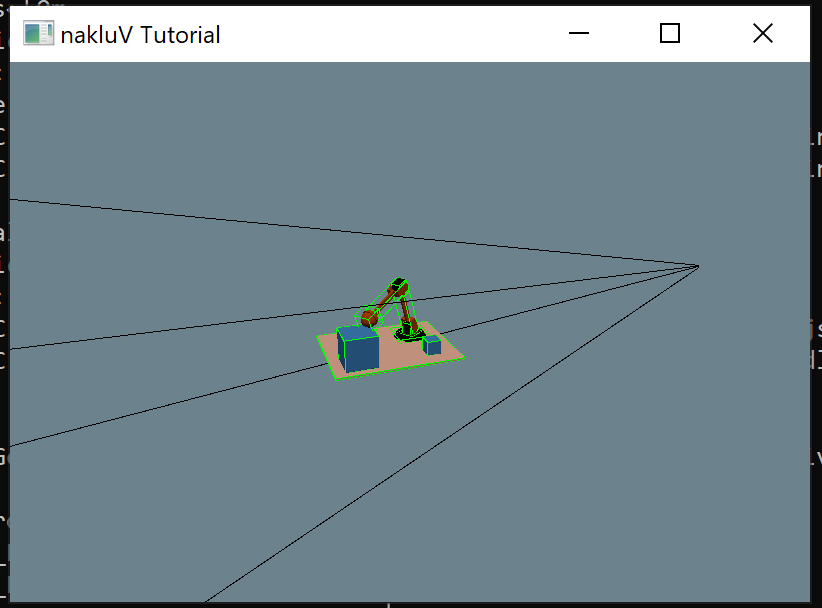
Spend some time thinking about corner cases that the provided examples may not test. If you develop a test case for these, include the s72 and b72 files with your report as well.
There could be scenes where there are multiple instances of the same camera, and that should cause the code to throw. Also circular parents, which I haven't implemented how to check for.
Describe how your code handles camera handling and switching.
Debug camera is a separate camera from scene camera and user's free camera, showing the frustrum of the previous camera before going to debug mode, culling with that frustrum as well. Free camera and Debug camera are orbit cameras, press shift with mouse to shift.
Provide evidence that these interactions work. Possible evidence: a screen recording showing debug, user, and scene camera switching and interactive movement of the debug and user cameras.
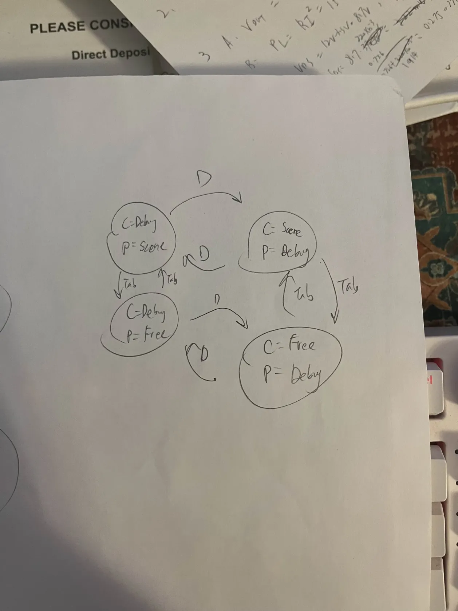
Describe, in a few sentences, where your culling test is implemented; how you computed bounding boxes and the camera frustum; and the approach you used in your box-frustum test (draw and include a picture if it makes your explanation easier). Include references to specific functions and structures in your code for us to examine further.
I did tested separating axes of the following: three unique axes of the bbox's faces, five unique axes of the frustrum's faces, cross product of any of the three unique edges and any of the 6 unique edges of the frustrum. Here, by unique I mean linearly independent;
Include, as evidence, a screenshot or video showing that culling is working (e.g., by using a debug camera to show that meshes outside the user camera's view aren't being drawn).
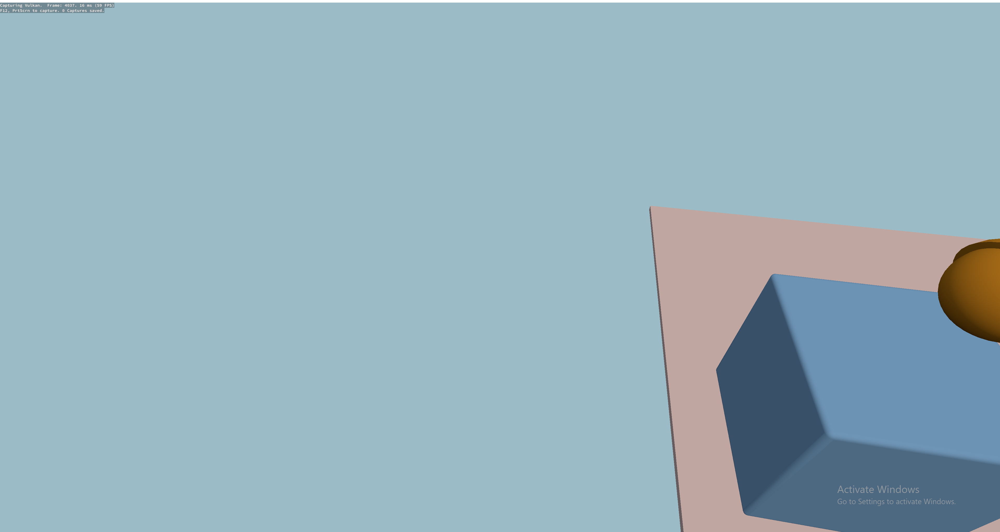
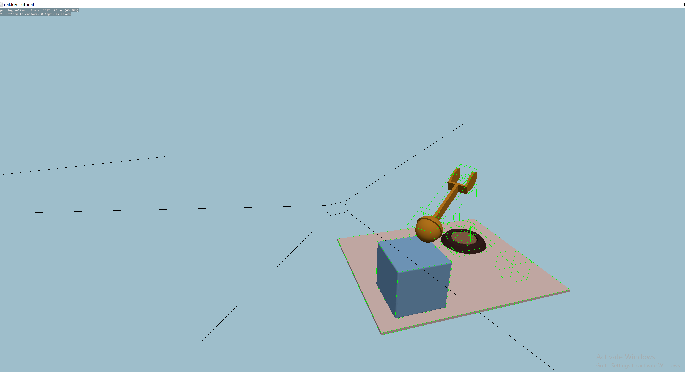
Also include evidence that your culling works on any particularly difficult cases you may have thought up (include .s72 / .b72 files as appropriate).
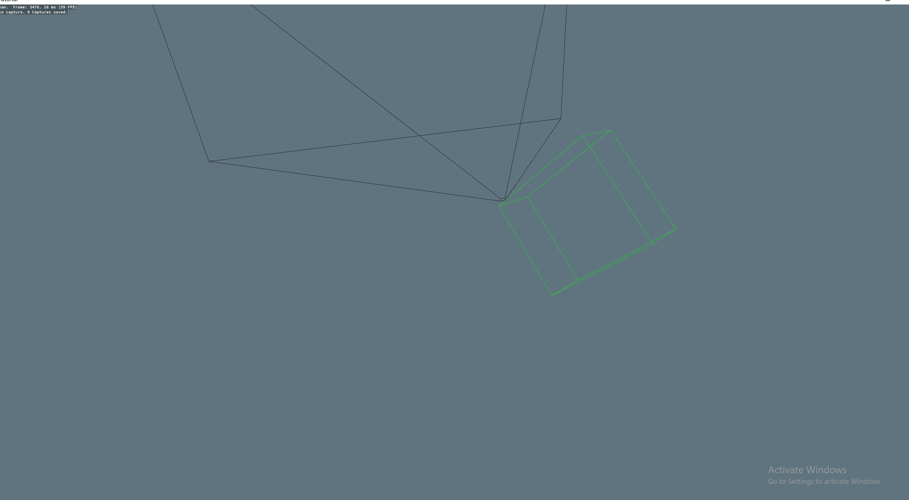
Demonstrate a scene and camera angle where your culling code improves performance; and demonstrate one where it does not improve performance. Include screen shots and make a chart or graph of median frame times as evidence for the performance impact.
I didn't have time to figure out how to get frame time data from headless mode. But I used renderdoc to test the two cases where culling increase or decreases frame time. The frame time for the camera angle where basically all the sphereflakes are visible is slower with culling because the culling tests are done but not much actually gets culled.
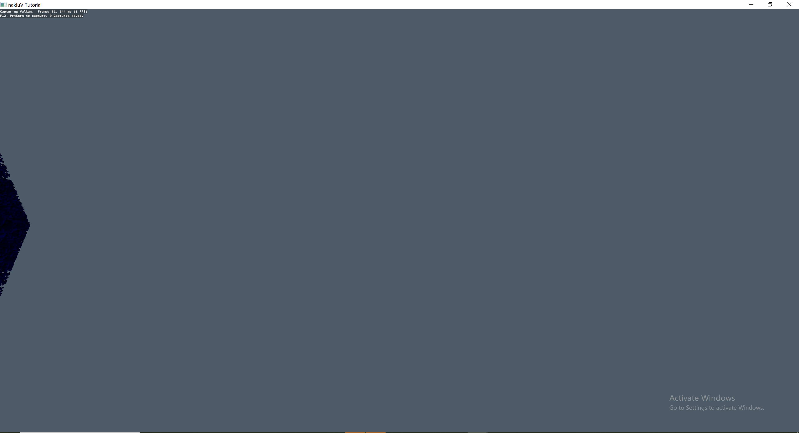
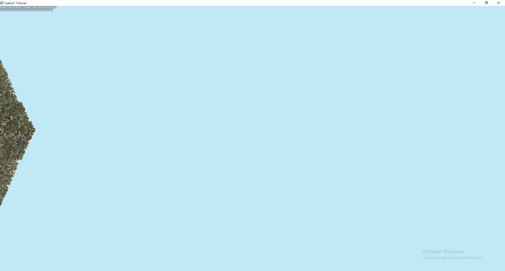
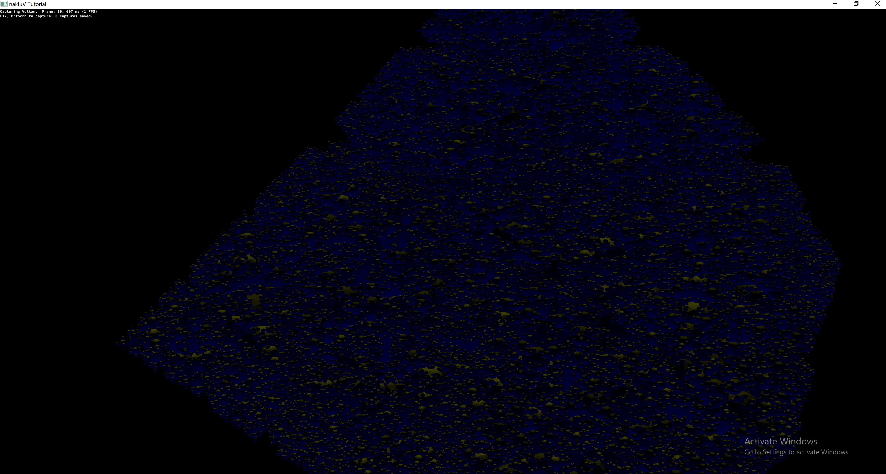
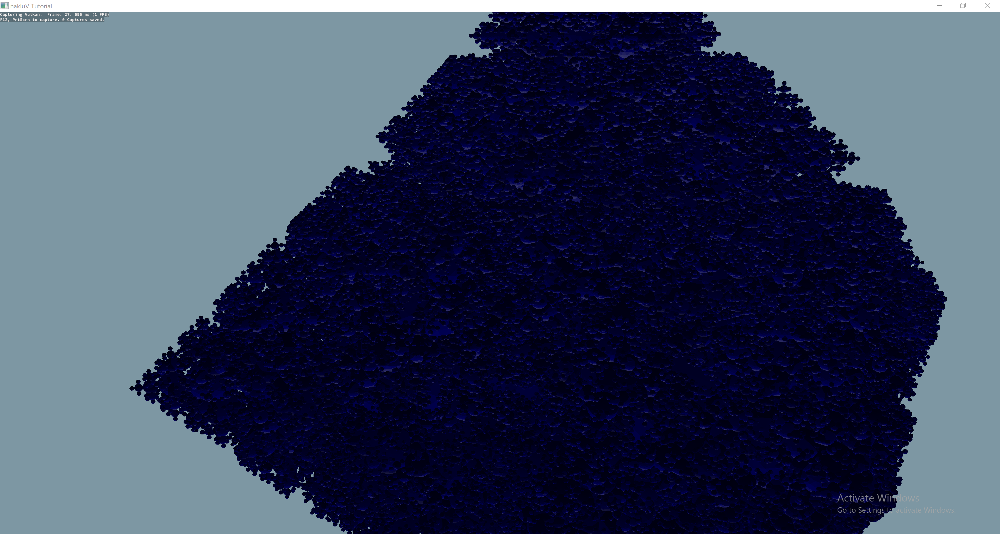
Describe, in a few sentences: how your viewer stores keyframes; and where/how your code handles updated transformations due to animations. Include code and structure references.
The viewer just use std::upper_bound to get the last frame used(actually there should be a better way) and interpolate.
Provide evidence that your viewer can play back s72 animation. Make sure to demonstrate that both camera and object animation work, and that animation of scene graph hierarchies work.
Describe for your CPU- and GPU-bottlenecked scenes what your approach was to moving the critical part of the workload to the CPU or GPU, respectively. Include a screenshot of the scenes as well as s72 and b72 files as needed.
The gpu bottleneck is a scene with tons of instances of overlapping planes. The camera moves farther away from the plane, making the fragment shader do less work. The cpu still instance the same planes and no culling is happening, so the CPU should be doing the same amount of work.
The cpu bottleneck is a scene where there's nothing and a scene where the sphereflake is outside of the frustrum. Since culling is happening, both GPUs get basically no work, but CPU has to do culling for the scene where there are many instances offscreen.
Describe how you generated the scenes.
I used blender and then exported it using the exporter
Describe how you tested the scenes -- including any relevant hardware information about the computer(s) you tested on.
I tested using renderdoc for the gpu bottleneck, and I used headless mode to print out frame time for the cpu bottleneck.
Provide evidence that in each scene the CPU- or GPU-part of the workload is, indeed, a bottleneck. Use charts and graphs as appropriate to make your argument.
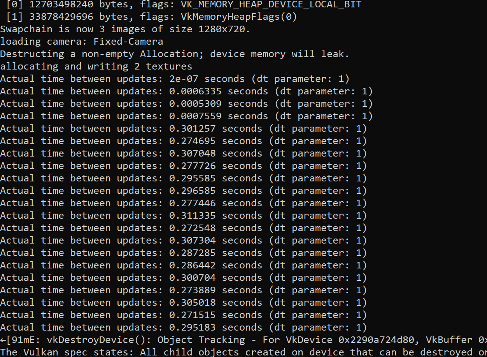
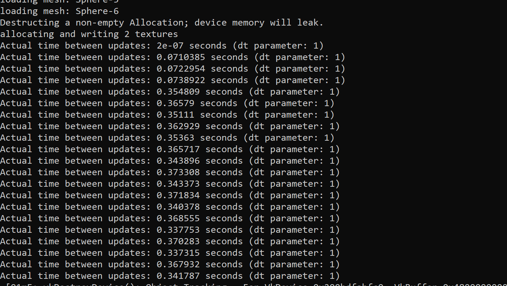
Write a subsection (<h4>) of this section for every attempted performance improvement. If you attempted no further performance improvements leave this section blank.
In each subsection, include a description of what you tried (including references to your code) and evidence of where (and if) the optimization actually did improve performance. Report -- at a minimum -- frame times for the same scene collected in headless mode with the optimization on and off. Ideally, develop a scene for which the optimization does improve performance and another scene for which it does not.
This is the end of the structured report. Feel free to add feedback about A1 to this section.